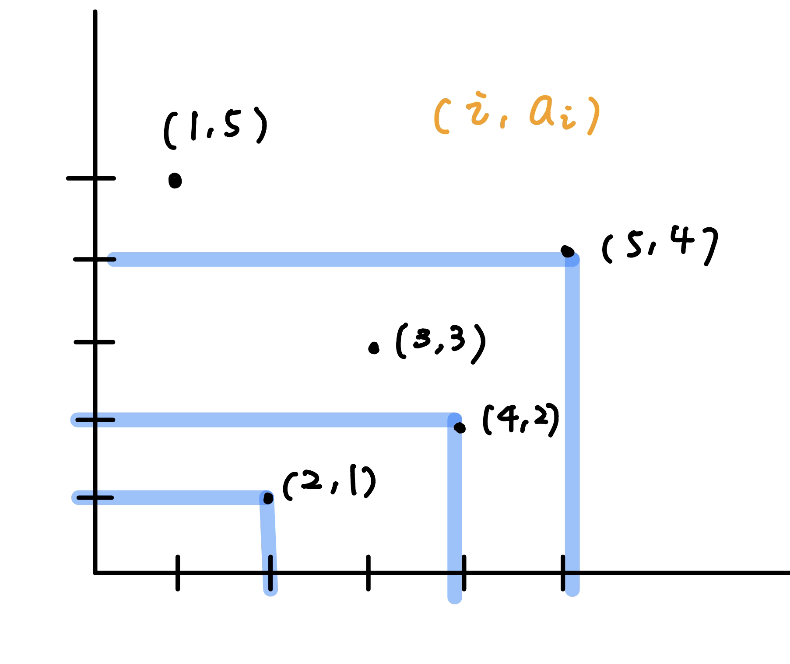
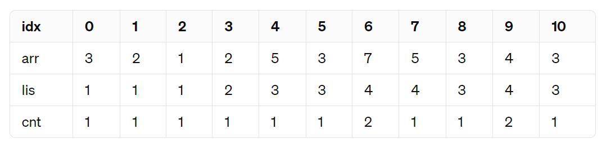
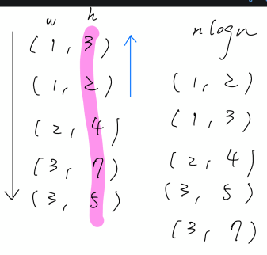
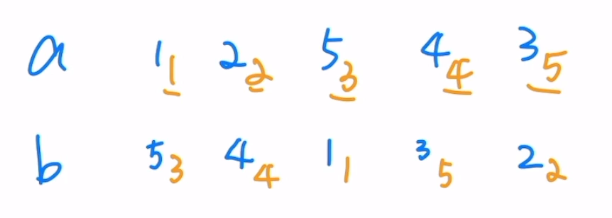
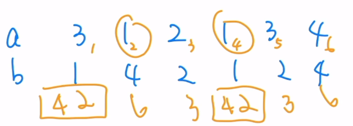
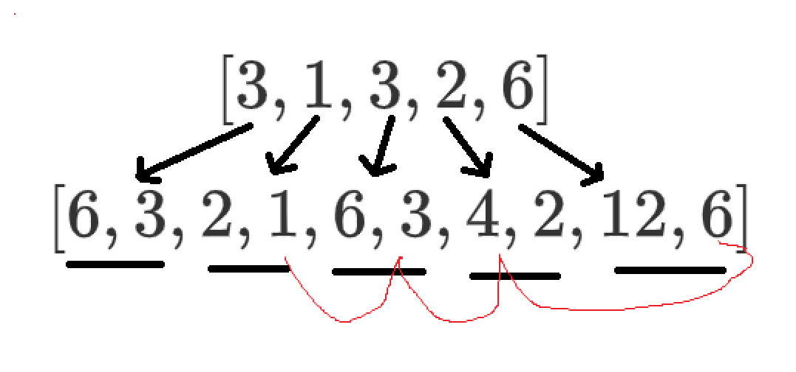
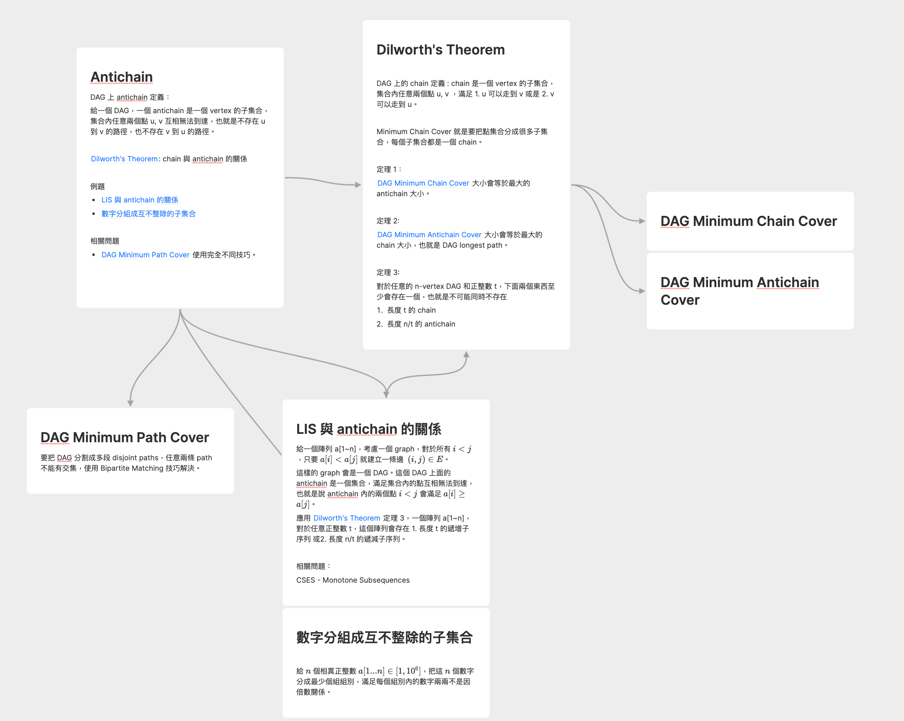
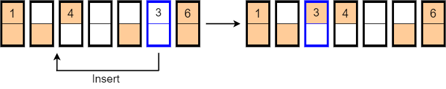
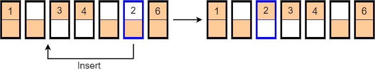

LIS
介紹
CSES - Increasing Subsequence 給一個長度為 \(n\) 的陣列 \(a_1, a_2 ,\ldots ,a_n\) ，找出一個最長的子序列，裡面的值是嚴格遞增的
\(n\le 2\times 10^5,a_i\le 10^9\)
考慮最後一個東西一定要選，\(dp[i]\) 表示只看 \(a_1, \ldots ,a_i\) ，第 \(i\) 項一定要選的最好答案，我們可以列出轉移式
\[dp[i]=\max \limits_{j< i \texttt{ and }a_j<a_i} \{ dp[j] + 1 \}\]
最後的答案就是 \(\max \{ dp[1], dp[2], \ldots ,dp[n]\}\)
解法一 — 二分搜
考慮刪除沒有用的子問題，每一種可能的長度只會有一個點被留下來，lis 長度為 \(L\) 而被留下來的就是「長度 L 的最小可能結尾」。如果我們將這個資料存放在一個陣列 \(v\) ，這個陣列的元素是單調遞增的，在第 \(i\) 個回合計算 lis\((i)\) 時，我們搜尋找到 \(L=\max \limits_{v[j] < a[i]}\{ j \}\) ，於是我們得到 lis\((i) = L+1\) ，最後我們要記得將 lis\((i)\) 的算到 \(v\) 裡面。
code
vector < int > find_lis ( vector < int > & a ) {
int n = a . size ();
vector < int > dp ( n );
vector < int > v ;
for ( int i = 0 ; i < n ; i ++ ) {
if ( v . empty () || v . back () < a [ i ]) {
v . push_back ( a [ i ]);
dp [ i ] = v . size ();
} else {
dp [ i ] = lower_bound ( ALL ( v ), a [ i ]) - v . begin () + 1 ;
* lower_bound ( ALL ( v ), a [ i ]) = a [ i ];
}
}
return dp ;
}
解法二 — 二維座標
觀察轉移式
\[dp[i]=\max \limits_{j< i \texttt{ and }a_j<a_i} \{ dp[j] + 1 \}\]
我們將 \((i,a_i)\) 打在二維座標上看

也就是我們需要一個 DS 去「回傳 \(a_i < x\) 」的最大值。這利用值域線段樹或 BIT，v\([x]\) 維護以 \(x\) 結尾的最大 LIS 長度。
變化
帶權 LIS
Atcoder dp contest Q. Flowers 給一個長度為 \(n\) 的陣列 \(a_1, a_2 ,\ldots ,a_n\) ，每個 \(i\) 有一個權重 \(w_i\) ，找出一個權重和最大的子序列，裡面的值是嚴格遞增的
思路
\[dp[i]=\max \limits_{j< i \texttt{ and }a_j<a_i} \{ dp[j] + w_i \}\]
一樣用用值域線段樹即可
字典序
問題
給一個長度為 \(n\) 的陣列 \(a_1, a_2 ,\ldots ,a_n\) ，輸出字典序最小的 LIS
思路
字典序是從序列的頭開始比較，所以要把 LIS 變化一下改成「從第 i 項到第 n 項的 LIS 長度」
\[
\begin{array}{c|cccccc}
陣列&3&1&4&2&5&9\\
\hline
往後的 \space \texttt{LIS} \space 長度& 4 & 4 & 3 & 3 & 2 & 1\\
\end{array}
\]
code
vector < int > v [ N ]; // v[x] : 存 LIS(i) = x 的 i
void solve () {
vector < int > ans ;
int pos = 0 , last = 0 ;
for ( int i = len ; i >= 1 ; i -- ) {
int mn = 1e9 ;
int nxt_pos = 0 ;
for ( auto j : v [ i ]) {
if ( a [ j ] > last && j > pos && a [ j ] < mn ) {
nxt_pos = j ;
mn = a [ j ];
}
}
ans . push_back ( mn );
pos = nxt_pos ;
last = mn ;
}
}
LIS 數量
LIS 方法數 LeetCode 673. Number of Longest Increasing Subsequence
給一個長度為 \(n\) 的陣列 \(a_1, a_2 ,\ldots ,a_n\) ，LIS 有幾種選法
\(n\le 2\times 10^5\)
【暴力 O(n^2) 解】:
跟 O(n^2) 的 LIS 解差不多，就是當長度一樣時方法數繼續累加；當長度更大時將方法數覆蓋過去。
code
for ( int i = 0 ; i < n ; i ++ ) {
for ( int j = 0 ; j < i ; j ++ ) {
if ( a [ j ] < a [ i ]) {
if ( dp [ j ] + 1 == dp [ i ]) {
cnt [ i ] += cnt [ j ];
} else if ( dp [ j ] + 1 > dp [ i ]) {
cnt [ i ] = cnt [ j ];
dp [ i ] = dp [ j ] + 1 ;
}
}
}
【優化的第一種方法: 線段樹】
使用值域線段樹，v[x] 維護 (max length, cnt) 分別代表目前以 x 這個值作為結尾得遞增序列長度最大是多少，並且總共有幾個。在 update(x, length, cnt) 的時候，如果要更新的長度與線段樹原本儲存的長度是一樣的，也就是 node[x].length = length，那就將 node[x].cnt += cnt；如果長度更大，也就是 node[x].length < length，那就將方法數直接覆蓋過去變成 cnt，node[x].cnt = cnt。
【優化的第二種方法: 利用單調性】
\(f(i)\) 表示以 \(a_i\) 為結尾，所能選取的最長的子序列的長度，而 \(g(i)\) 表示以 \(i\) 為結尾，在選取子序列為最長的情況下的方案數。我們首先用二分在 \(O(n \log n)\) 構建出我們的 \(f(i)\) 序列。對於 \(g(i)\) ，我們列出他的轉移式
g(i) = sum{ g(j) | j < i && a[j] < a[i] && f(j) = f(i) - 1}
考慮單調性，對於 \(j<i,f(j)=f(i)\) ，總有 \(a_j \ge a_i\) 。即 \(f(i)\) 相等的所有 \(a_i\) 一定構成遞減的序列（非增序列）。這讓我們想到可以用 bucket 與指針來使用這個單調性維護。具體來，bucket[x] 是一個 vector，存的是 \(f(i)=x\) 的 \(a_i\) ，而因為根據剛剛的性質，bucket[x] 是遞減的，而我們會用來查找 v[x] 的數字也會是遞減的，所以我們可以用一個指針來維護當前算到的地方，答案就是指針之後的後綴總和。因為指針只會單調往右移，所以時間複雜度是 \(O(n)\) 。

以這個例子來說，當跑到 i = 3, a[i] = 2 時當前的情況 bucket[1] = {3, 2, 1}，而 bucket[1] 的指針 pos[1] = 0，後綴和為 7。考慮到是 a[i] = 2 要接過來，所以我們必須將指針移到直到指到的數字比 2 小，所以 pos[1] = 2，後綴和就是 1。
code
class Solution {
public :
vector < int > get_lis ( vector < int >& a ) {
int n = a . size ();
vector < int > dp ( n );
vector < int > v ;
for ( int i = 0 ; i < n ; i ++ ) {
if ( v . empty () || v . back () < a [ i ]) {
v . push_back ( a [ i ]);
dp [ i ] = v . size ();
} else {
auto pos = lower_bound ( v . begin (), v . end (), a [ i ]);
dp [ i ] = pos - v . begin () + 1 ;
* pos = a [ i ];
}
}
return dp ;
}
int findNumberOfLIS ( vector < int >& a ) {
int n = a . size ();
vector < int > dp = get_lis ( a );
vector < int > cnt ( n + 1 );
vector < int > pos ( n + 1 );
vector < vector < int >> bucket ( n + 1 );
vector < int > bucket_sum ( n + 1 );
for ( int i = 0 ; i < n ; i ++ ) {
int len = dp [ i ];
if ( len == 1 ) {
cnt [ i ] = 1 ;
} else {
while ( pos [ len - 1 ] < bucket [ len - 1 ]. size () && a [ bucket [ len - 1 ][ pos [ len - 1 ]]] >= a [ i ]) {
bucket_sum [ len - 1 ] -= cnt [ bucket [ len - 1 ][ pos [ len - 1 ]]];
pos [ len - 1 ] ++ ;
}
cnt [ i ] = bucket_sum [ len - 1 ];
}
bucket [ len ]. push_back ( i );
bucket_sum [ len ] += cnt [ i ];
}
int lis_len = * max_element ( dp . begin (), dp . end ());
int ans = 0 ;
for ( int i = 0 ; i < n ; i ++ ) {
if ( dp [ i ] == lis_len ) {
ans += cnt [ i ];
}
}
return ans ;
}
};
LIS 不同的選法數
給一個長度為 \(n\) 的陣列 \(a_1, a_2 ,\ldots ,a_n\) ，輸出有幾種不同的 LIS
\(n\le 2\times 10^5\)
思路
洛谷 P1108 低价购买 是一個類似題，不過用 O(n^2) 即可通過，所以我們也先來想想 O(n^2) 的式子該怎麼列
for ( int i = 0 ; i < n ; i ++ ) {
for ( int j = 0 ; j < i ; j ++ ) {
if ( a [ j ] < a [ i ]) {
if ( dp [ j ] + 1 == dp [ i ]) {
cnt [ i ] += cnt [ j ];
} else if ( dp [ j ] + 1 > dp [ i ]) {
cnt [ i ] = cnt [ j ];
dp [ i ] = dp [ j ] + 1 ;
}
}
}
// 避免重複計算
for ( int j = 0 ; j < i ; j ++ ) {
if ( a [ j ] == a [ i ] && dp [ j ] == dp [ i ]) {
cnt [ j ] = 0 ;
}
}
}
也就代表說同一種數字，我們只需要那種數字最後出現的地方紀錄他的方法數就好。對應到上面講的兩種做法，第一種方法在更新時就直接把原本的 cnt 給覆蓋過去；而第二種做法在把數字 push back 到 bucket 時直接檢查 bucket 是否含有同樣的數字，如果是的話就把前面的砍掉就好，這並不會影響指針所維護的單調性。
練習題 洛谷 P1108 低价购买
給一個長度為 \(n\) 的陣列 \(a_1, a_2 ,\ldots ,a_n\) ，輸出有幾種不同的 最長下降子序列
\(n\le 5000\)
code
#include <bits/stdc++.h>
#define int long long
using namespace std ;
vector < int > get_lis ( vector < int >& a ) {
int n = a . size ();
vector < int > dp ( n );
vector < int > v ;
for ( int i = 0 ; i < n ; i ++ ) {
if ( v . empty () || v . back () < a [ i ]) {
v . push_back ( a [ i ]);
dp [ i ] = v . size ();
} else {
auto pos = lower_bound ( v . begin (), v . end (), a [ i ]);
dp [ i ] = pos - v . begin () + 1 ;
* pos = a [ i ];
}
}
return dp ;
}
void findNumberOfLIS ( vector < int >& a ) {
int n = a . size ();
vector < int > dp = get_lis ( a );
vector < int > cnt ( n + 1 );
vector < int > pos ( n + 1 );
vector < vector < int >> bucket ( n + 1 );
vector < int > bucket_sum ( n + 1 );
for ( int i = 0 ; i < n ; i ++ ) {
int len = dp [ i ];
if ( len == 1 ) {
cnt [ i ] = 1 ;
} else {
while ( pos [ len - 1 ] < bucket [ len - 1 ]. size () && a [ bucket [ len - 1 ][ pos [ len - 1 ]]] >= a [ i ]) {
bucket_sum [ len - 1 ] -= cnt [ bucket [ len - 1 ][ pos [ len - 1 ]]];
pos [ len - 1 ] ++ ;
}
cnt [ i ] = bucket_sum [ len - 1 ];
}
if ( bucket [ len ]. size () && a [ bucket [ len ]. back ()] == a [ i ]) {
bucket_sum [ len ] -= cnt [ bucket [ len ]. back ()];
cnt [ bucket [ len ]. back ()] = 0 ;
bucket [ len ]. pop_back ();
}
bucket [ len ]. push_back ( i );
bucket_sum [ len ] += cnt [ i ];
}
int lis_len = * max_element ( dp . begin (), dp . end ());
int ans = 0 ;
for ( int i = 0 ; i < n ; i ++ ) {
if ( dp [ i ] == lis_len ) {
ans += cnt [ i ];
}
}
cout << lis_len << ' ' << ans << '\n' ;
}
signed main () {
int n ;
cin >> n ;
vector < int > a ( n );
for ( int i = 0 ; i < n ; i ++ ) {
cin >> a [ i ];
}
int mx = * max_element ( a . begin (), a . end ());
for ( int i = 0 ; i < n ; i ++ ) {
// 題目要求最長下降子序列
a [ i ] = mx - a [ i ];
}
findNumberOfLIS ( a );
}
必經 LIS
CF 486 E. LIS of Sequence 給一個長度為 \(n\) 的陣列 \(a_1, a_2 ,\ldots ,a_n\) ，問對於每一項 \(a_i\) 是屬於哪個 type
\(\text{type 1: }\) 在每一個 LIS 都一定包含 \(a_i\)
\(\text{type 2: }\) 在至少一個 LIS 包含 \(a_i\)
\(\text{type 3: }\) \(a_i\) 完全不在任何 LIS 之中
\(n\le 10^5\)
思路
令 \(L[i],R[i]\) 分別代表以 \(a_i\) 結尾，以 \(a_i\) 開頭的 LIS 長度
如果 \(a_i\) 在 LIS 中就代表 : LIS 長度 \(= L[i]+R[i]-1\)
這樣就可以判斷是不是 type 3 了。若為 type 1，代表 \(L[i]\) 唯一，否則如果有人 \(L[i]=L[j]\) 那後面的 \(R[i]\) 兩個都可以接
code
int getPos ( vector < int > & lis , int x ) {
return lower_bound ( lis . begin (), lis . end (), x ) - lis . begin ();
}
void solve () {
cin >> n ;
a . resize ( n );
for ( int i = 0 ; i < n ; i ++ ) {
cin >> a [ i ];
}
// 結尾的 LIS
vector < int > lis ;
int len = 0 , cur = 0 ;
for ( int i = 0 ; i < n ; i ++ ) {
l [ i ] = getPos ( lis , a [ i ]) + 1 ;
if ( l [ i ] - 1 < lis . size ()) lis [ l [ i ] - 1 ] = a [ i ];
else lis . pb ( a [ i ]);
len = max ( len , l [ i ]);
}
// 開頭的 LIS
// 從後面看過來遞減, 加了負號相當於遞增
lis . clear ();
cur = m - 1 ;
for ( int i = n - 1 ; i >= 0 ; i -- ) {
r [ i ] = getPos ( lis , - a [ i ]) + 1 ;
if ( r [ i ] - 1 < lis . size ()) lis [ r [ i ] - 1 ] = - a [ i ];
else lis . pb ( - a [ i ]);
}
for ( int i = 0 ; i < n ; i ++ ) {
if ( l [ i ] + r [ i ] - 1 == len ) {
cnt [ l [ i ]] ++ ;
}
else // type 3
}
for ( int i = 0 ; i < n ; i ++ ) {
if ( l [ i ] + r [ i ] - 1 == len ) {
if ( cnt [ l [ i ]] == 1 ) // type 1
else // type 2
}
}
}
CS Academy Critical Cells 給一個 \(n\times m\) 的 grid，其中有 \(k\) 格是特殊格，從 \((1,1)\) 開始要走到 \((n,m)\) ，每次可向右，或向下移動一格，目標是走過越多格特殊越好。問有幾個特殊格是移除之後能走過的最大特殊格數量會減少
\(1\le n, m\le 10^9, 1\le k\le 10^5\)
思路
直接把 \(k\) 個特殊格的座標 \((x,y)\) 當成上面那個問題做就好
切 k 段 LIS
問題
給一個長度為 \(n\) 的陣列 \(a_1, a_2 ,\ldots ,a_n\) ，和 \(k\) ，將陣列 a 分成 k 段，每段各自求 LIS，目標是讓 k 段 LIS 長度總和最大
\(n\times k \le 10^5\)
思路
\(dp(k, i)=\) \(a_1 , \ldots ,a_n\) 分成 \(k\) 段的最好答案，\(a_i\) 一定要選
轉移式
\[
dp(k, i) = \max \begin{cases} dp(k, j) + 1 \\ dp(k - 1, j) + 1 \text{ if } a_j \ge a_i\end{cases}
\]
複雜度 \(O(n\times k)\times O(\log n)\)
code
#include <algorithm>
#include <iostream>
#include <vector>
using namespace std ;
struct BIT {
int len ;
vector < int > bit ;
// b[x] : 某個需要快速處理的陣列
// bit[x] = min(b[x - lowbit(x) + 1] ~ b[x])
BIT ( int n ) {
len = n ;
bit . resize ( n + 1 );
}
inline int lowbit ( int x ) {
return x & ( - x );
}
void update ( int pos , int val ) { // 把 b[pos] 跟 val 取 max
for (; pos <= len ; pos += lowbit ( pos )) {
bit [ pos ] = max ( bit [ pos ], val );
}
}
int prefix_max ( int pos ) { // 找 b[1] ~ b[pos] 最大值
int ans = 0 ;
for (; pos > 0 ; pos -= lowbit ( pos )) {
ans = max ( ans , bit [ pos ]);
}
return ans ;
}
};
int solve ( int n , int K , const vector < int > & a ) {
vector < vector < int >> dp ( K + 1 , vector < int > ( n , 0 ));
for ( int k = 1 ; k <= K ; k ++ ) {
// 考慮開新的一段
int mx = 0 ;
for ( int i = 0 ; i < n ; i ++ ) {
dp [ k ][ i ] = max ( mx + 1 , dp [ k - 1 ][ i ]);
mx = max ( mx , dp [ k - 1 ][ i ]);
}
// 考慮前一個選的東西在同段
BIT DS ( n ); // b[i] = 用了 k 段，且結尾數值為 b[i] 的答案
for ( int i = 0 ; i < n ; i ++ ) {
// 快的做法
dp [ k ][ i ] = max ( dp [ k ][ i ], DS . prefix_max ( a [ i ] - 1 ) + 1 );
DS . update ( a [ i ], dp [ k ][ i ]);
// 慢的做法
/*
for (int j = 0; j < i; j++) {
if (a[j] < a[i]) {
dp[k][i] = max(dp[k][i], dp[k][j] + 1);
}
}
*/
}
}
return * max_element ( dp [ K ]. begin (), dp [ K ]. end ());
}
int main () {
int n , K ;
vector < int > a ;
cin >> n >> K ;
a = vector < int > ( n );
for ( int i = 0 ; i < n ; i ++ ) cin >> a [ i ];
// 離散化：把 a[i] 數值範圍轉為 0~(n-1)
vector < int > t = a ;
sort ( t . begin (), t . end ());
for ( int & x : a ) {
x = 1 + lower_bound ( t . begin (), t . end (), x ) - t . begin ();
}
int ans = solve ( n , K , a );
cout << ans << '\n' ;
}
CF 650 D. Zip-line 給一個長度為 \(n\) 的序列 \(a_1, \ldots ,a_n\) ，有 \(q\) 筆詢問 :
\(\text{query}(i,x):\) 若將 \(a_i\) 改成 \(x\) ，LIS\((a)\) 是多少
\(n,m\le 4\times 10^5, 1\le a_i, x\le 10^9\)
思路
將以下兩種情況取 max 就是改變後的 LIS 長度
其中，包含 \(a_i = x\) 的 lis 可以在建 l[ ], r[ ] 的時候順便做好，詳見代碼
小心這題會卡時間
code
#include <bits/stdc++.h>
#define int long long
#define pb push_back
#define mk make_pair
#define F first
#define S second
#define pii pair<int, int>
using namespace std ;
struct qry {
int idx , val , id , ans ;
};
const int INF = 9e18 ;
const int maxn = 4e6 + 5 ;
int n , m ;
vector < int > a ;
vector < qry > q ;
int l [ maxn ], r [ maxn ], all [ maxn ], cnt [ maxn ];
int getPos ( vector < int > & lis , int x ) {
return lower_bound ( lis . begin (), lis . end (), x ) - lis . begin ();
}
void solve () {
scanf ( "%lld%lld" , & n , & m );
a . resize ( n );
q . resize ( m );
for ( int i = 0 ; i < n ; i ++ ) {
scanf ( "%lld" , & a [ i ]);
}
for ( int i = 0 ; i < m ; i ++ ) {
scanf ( "%lld%lld" , & q [ i ]. idx , & q [ i ]. val );
q [ i ]. idx -- ;
q [ i ]. id = i ;
}
sort ( q . begin (), q . end (), []( qry a , qry b )
{ return a . idx < b . idx ; });
vector < int > lis ;
int len = 0 , cur = 0 ;
for ( int i = 0 ; i < n ; i ++ ) {
while ( cur < m && q [ cur ]. idx == i ) {
q [ cur ++ ]. ans += getPos ( lis , q [ cur ]. val );
}
l [ i ] = getPos ( lis , a [ i ]) + 1 ;
if ( l [ i ] - 1 < lis . size ()) {
lis [ l [ i ] - 1 ] = a [ i ];
} else {
lis . pb ( a [ i ]);
}
len = max ( len , l [ i ]);
}
lis . clear ();
cur = m - 1 ;
for ( int i = n - 1 ; i >= 0 ; i -- ) {
while ( cur >= 0 && q [ cur ]. idx == i ) {
q [ cur -- ]. ans += getPos ( lis , - q [ cur ]. val );
}
r [ i ] = getPos ( lis , - a [ i ]) + 1 ;
if ( r [ i ] - 1 < lis . size ()) {
lis [ r [ i ] - 1 ] = - a [ i ];
} else {
lis . pb ( - a [ i ]);
}
}
for ( int i = 0 ; i < n ; i ++ ) {
if ( l [ i ] + r [ i ] - 1 == len ) {
cnt [ l [ i ]] ++ ;
}
}
for ( int i = 0 ; i < n ; i ++ ) {
if ( l [ i ] + r [ i ] - 1 == len ) {
all [ i ] = ( cnt [ l [ i ]] == 1 );
}
}
sort ( q . begin (), q . end (), []( qry a , qry b )
{ return a . id < b . id ; });
for ( int i = 0 ; i < m ; i ++ ) {
printf ( "%lld \n " , max ( q [ i ]. ans + 1 , len - all [ q [ i ]. idx ]));
}
}
signed main () {
solve ();
}
二維偏序
嚴格
問題（Box Stacking Problem）
給你 \(n\) 個 \((x,y)\) ，問你最多可以選幾個，滿足 \(x_i<x_j\) 且 \(y_i < y_j\)
思路
將 \((x,y)\) 先按照 \(x\) 小到大排序，對於 \(x\) 相同的，將 \(y\) 大到小排序（這樣才不會選到兩個 \(x\) 一樣的，如圖）

這樣就可以將問題變成由 \(y\) 組成的 LIS 長度
CF 4 D. Mysterious Present 給你 \(n\) 個 \((x,y)\) ，問你最多可以選幾個，滿足 \(x_i<x_j\) 且 \(y_i < y_j\) ，輸出選的編號
\(1\le n\le 5000,1\le w,h\le 10^6\)
非嚴格
APCS 2021 1 月 p4. 飛黃騰達 給你 \(n\) 個 \((x,y)\) ，問你最多可以選幾個，滿足 \(x_i\le x_j\) 且 \(y_i \le y_j\)
思路
將 \((x,y)\) 先按照 \(x\) 小到大排序，對於 \(x\) 相同的，將 \(y\) 小到大排序（可以選到兩個 \(x\) 一樣的）。在選 \(y\) 的時候，要使用 upper bound，因為 \(y\) 相同的是可以一起選的
LCS 轉 LIS
LCS - 出現一次 給兩個長度為 \(n\) 的序列 \(a,b\) ，求 LCS 長度
\(n\le 5\times 10^5,1\le a_i, b_i\le n,\) 同種數字出現在陣列 1 次
思路
將陣列 \(a\) 從左到右編號 \(1\sim n\) ，將 \(b_i\) 編號為 \(b_i\) 這個數值在 \(a\) 內的編號，如圖

這樣就可以用編號組成的新陣列求 LIS
LCS - 出現兩次
給兩個長度為 \(n\) 的序列 \(a,b\) ，求 LCS 長度
\(n\le 5\times 10^5,1\le a_i, b_i\le n,\) 同種數字出現在陣列 1 或 2 次
思路
將同一種數值出現的編號反著放，這樣可以保證小的一定會被先選

Sprout OJ 421 給長度 \(n\) 的序列 \(a_1, \ldots ,a_n\) ，可以將任一個數字變兩倍，輸出每個數字均大於 \(m\) 的最長非嚴格遞增序列長度
\(1\le n\le 5\times 10^5, 1\le m, a_i \le 10^9\)
思路
將 \(2\times a_i, a_i\) 依序放到新陣列裡面，在新陣列做

然後再用 upper bound 求 LIS 就好了
TOI 初選 2021 pC. 粉刷護欄 給兩個長度為 \(n\) 的陣列 \(a,b\) ，數字恰好都出現在 \(a,b\) 各一次，你可以在 \(a,b\) 之間對同種數字連線，問線不能交叉下最多能連幾條，輸出字典序最小的方案
\(n\le 2\times 10^5,0\le a_i, b_i\le 10^9\)
思路
不交叉 iff \(i_a < i_b\) 且 \(j_a < j_b\) ，就變成 LCS 出現一次的問題了
在加上上面提到的判字典序就可以了
code
#include <iostream>
#include <vector>
#include <algorithm>
#include <queue>
#include <map>
using namespace std ;
int a [ 200005 ], b [ 200005 ];
int dp [ 200005 ];
map < int , int > mp ;
vector < int > s [ 200005 ];
int main () {
int n ;
cin >> n ;
for ( int i = 1 ; i <= n ; i ++ ) {
cin >> a [ i ];
}
for ( int i = 1 ; i <= n ; i ++ ) {
cin >> b [ i ];
mp [ b [ i ]] = i ;
}
vector < int > v ;
vector < int > arr ;
int mx = 0 ;
for ( int i = n ; i >= 1 ; i -- ) {
int pos = mp [ a [ i ]];
arr . push_back ( pos );
pos = n - 1 - pos ;
if ( ! v . size () || pos > v . back ()) {
v . push_back ( pos );
dp [ i ] = v . size ();
}
else {
dp [ i ] = lower_bound ( v . begin (), v . end (), pos ) - v . begin () + 1 ;
* lower_bound ( v . begin (), v . end (), pos ) = pos ;
}
s [ dp [ i ]]. push_back ( i );
mx = max ( mx , dp [ i ]);
}
int pos1 = 0 , pos2 = 0 ;
for ( int i = mx ; i >= 1 ; i -- ) {
int ans = 0 , pos = 0 ;
for ( auto & j : s [ i ]) {
if ( a [ j ] > ans && j > pos1 && mp [ a [ j ]] > pos2 ) {
pos = j ;
ans = a [ j ];
}
}
cout << ans << ' ' ;
pos1 = pos ;
pos2 = mp [ a [ pos ]];
}
}
Dilworth's theorom

Dilworth's theorom
例題
LIS deletion
給一長度為 \(n\) 的陣列 \(a\) ，每次可以從 \(a\) 刪掉一個嚴格遞增的子序列，求最少幾次才能刪完
\(n\le 2\times 10^5, 1\le a_i \le 10^9\)
思路
答案相當於求 LDS
題目
CSES - Increasing Subsequence II 給一個長度為 \(n\) 的陣列 \(a_1, \ldots ,a_n\) ，問有幾個遞增數列
\(n\le 2\times 10^5, a_i\le 10^9\)
思路
dp[i] = 看 1 ~ i，以 a[i] 為結尾的遞增數列有幾個
轉移 dp[i] = sum(dp[j] | j < i && a[j] < a[i] )
Atcoder arc149 B. Two LIS Sum 給你兩個 \(1\ldots n\) 的 permutation \(a, b\) ，你可以做以下操作任意次
選一個 \(i\) ，swap\((a_i, a_{i + 1})\) 並 swap\((b_i, b_{i + 1})\)
輸出 LIS\((a)+\) LIS\((b)\) 最大可以是多少
\(2\le n\le 3\times 10^5\)
思路
我們考慮最後的答案 LIS 選擇的東西會是什麼，如果有沒選的，讓 a 把他選起來一定更好

如果 b 有選 a 沒選的，讓 a 選答案一定不會變差

所以我們可以得出一個結論 : 先將 a sort 好（b 也跟著 a 的順序變），答案就是 |a| + LIS(b)
Sloane's Box Stacking Problem Atcoder dp contest X. Tower
有 \(n\) 個箱子，每個箱子有 \((w,s,v)\) 代表重量、抗壓量、高度。一個箱子上方的重量總和，不能超過這個箱子的抗壓力量。問最多能疊多高 ?
\(1\le n\le 10^3,1\le w_i, s_i\le 10^4,1\le v_i\le 10^9\)
思路
考慮 Exchange Arguements，我們拿兩個箱子 \(i\) 跟 \(j\) 來比較。\(j\) 可以放比較下面 iff \(s_i - w_j < s_j - w_i\) 。
當我們將陣列用上面的 Exchange Arguements sort 好後，我們做類似背包問題，\(dp(i,j)=\) 考慮 \(1\ldots i\) ，重量總和 \(\le j\) 能取到的最大高度。轉移的話一樣考慮取 \(i\) 或不取 \(i\) ，取 \(i\) 的話剩下的重量就必須 \(\le s_i\)
\[dp(i, j)=\max \begin{cases} dp(i - 1, j - w_i)+v_i \space \text{if}\space 0 \le j - w_i \le s_i \\ dp(i - 1, j)\end{cases}\]
code
#include <bits/stdc++.h>
using namespace std ;
using ll = long long ;
const int N = 1010 , M = 20010 ;
struct faner {
int w , s , v ;
} a [ N ];
ll f [ M ], ans ;
bool cmp ( faner a , faner b ) {
return a . s + a . w < b . s + b . w ;
}
int main () {
int n ;
cin >> n ;
for ( int i = 1 ; i <= n ; i ++ ) {
cin >> a [ i ]. w >> a [ i ]. s >> a [ i ]. v ;
}
sort ( a + 1 , a + n + 1 , cmp );
for ( int i = 1 ; i <= n ; i ++ ) {
for ( int j = M - 1 ; j >= a [ i ]. w ; j -- ) {
if ( a [ i ]. s + a [ i ]. w >= j ) {
f [ j ] = max ( f [ j ], f [ j - a [ i ]. w ] + a [ i ]. v );
}
}
}
for ( int i = 1 ; i < M ; i ++ ) {
ans = max ( ans , f [ i ]);
}
cout << ans << '\n' ;
}
竹科實中 2023 校內賽 pB. 構造 LIS 給一顆 \(n\) 個點的樹，每個點上有一個未定的數 \(p_i\) ，構造 \(p=1\ldots n\) 的 permutation 使得 :
從 root 到 \(i\) ，以 \(p_i\) 結尾的 LIS 長度為 \(b_i\)
\(n\le 2\times 10^5\)
思路
先分析 :
考慮建圖，我們從小的連到大的。可以觀察到對於同樣 \(b_i\) 的 \(i\) ，越後面的 \(p_i\) 越小，所以上面兩個限制其實都只要連到最後面滿足條件的即可。
這樣會形成一個 DAG，所以答案就是 topo order
CS Academy - Strictly Increasing Array 給一個長度為 \(n\) 的陣列 \(a_1, \ldots ,a_n\) ，每次操作可以將某項變成任意整數，問最少幾次操作可使陣列嚴格遞增
\(n\le 10^5, 1\le a_i\le 10^9\)
思路
將問題轉換成「最多可以不改動幾個數」。若不動的相鄰兩項為 \(i,j\) 其中 \((i<j)\) ，那必須滿足 \(j-i \le a_j-a_i\) ，這樣中間才有辦法塞值域進去。
我們將式子整理一下變成 \(a_i - i \le a_j-j\) ，也就是在 \(a_i'=a_i-i\) 上找最長非嚴格遞增子序列
LMIO 2019 - Rabbit Carrot 有 \(n\) 個柱子，從左到右高度分別為 \(a_1, \ldots ,a_n\) ，從最左邊高度 \(0\) 開始， 目標是跳到最後一個柱子。最多只能向上跳 \(h\) ，向下跳無限制，問最少改動幾個柱子的高度才能達到目標。
思路
因為算有幾個要改我們還要去想要改成哪個高度比較好，問題相當複雜，不如反向思考，將問題轉換成「最多可以不改動 幾個」。\(i\) 要跳到 \(j\) 上面，中間還有 \((j-i)\) 次機會可以爬高 \(h\) ，所以我們列出 \(a_j\le a_i+h\cdot (j - i)\) 。移向可得 \(a_j-h\cdot j\le a_i -h\cdot i\) ，我們令 \(a_i'=a_i-h\cdot i\) ，用 \(a_i'\) 找最長非嚴格遞增子序列即可。
CSES - Collecting Numbers II 給一個 \(1\ldots n\) permutation \(a\) ，每輪可以從 \(a\) 刪掉一個遞增的子序列，一一定要從 \(1\) 取到 \(n\) 。有 \(q\) 筆操作如下 :
\(\text{swap}(i,j):\) 將 \(a_i\) 與 \(a_j\) swap，然後輸出當前 \(a\) 最少要幾輪才能取完
\(n\le 2\times 10^5, 1\le a_i \le 10^9\)
思路
2 如果再 1 後面就可以跟 1 一起取，否則必須再跑一輪，所以再沒 swap 的情況下只要計算 pos[a[i]] > pos[a[i + 1]] 的數量即可。有 swap 的話再好好維護一下 i, j 跟他們前後的貢獻即可
code
#include <bits/stdc++.h>
#define int long long
#define pb push_back
#define mk make_pair
#define F first
#define S second
#define pii pair<int, int>
using namespace std ;
const int INF = 9e18 ;
const int maxn = 2e5 + 5 ;
int n , m , cnt ;
int a [ maxn ], pos [ maxn ];
int up [ maxn ], down [ maxn ];
void update ( int u , int v ) {
vector < pii > st ;
if ( a [ u ] < n ) st . pb ({ a [ u ], a [ u ] + 1 });
if ( a [ v ] > 1 ) st . pb ({ a [ v ] - 1 , a [ v ]});
if ( a [ u ] > 1 ) st . pb ({ a [ u ] - 1 , a [ u ]});
if ( a [ v ] < n ) st . pb ({ a [ v ], a [ v ] + 1 });
pos [ a [ u ]] = v ;
pos [ a [ v ]] = u ;
swap ( a [ u ], a [ v ]);
for ( auto p = st . begin (); p != st . end (); p ++ ) {
cnt -= up [ p -> F ];
if ( pos [ p -> F ] > pos [ p -> S ]) cnt ++ ;
up [ p -> F ] = pos [ p -> F ] > pos [ p -> S ];
}
}
void solve () {
cin >> n >> m ;
for ( int i = 1 ; i <= n ; i ++ ) {
cin >> a [ i ];
pos [ a [ i ]] = i ;
}
for ( int i = 1 ; i <= n - 1 ; i ++ ) {
up [ i ] = pos [ i ] > pos [ i + 1 ];
if ( up [ i ]) cnt ++ ;
}
int u , v ;
while ( m -- ) {
cin >> u >> v ;
update ( u , v );
cout << cnt + 1 << " \n " ;
}
}
signed main () {
solve ();
}
參考資料